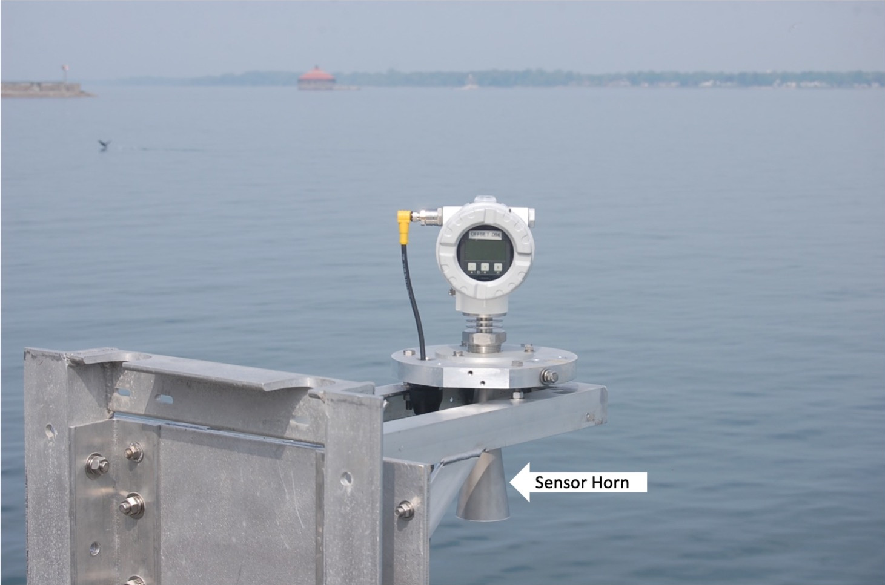
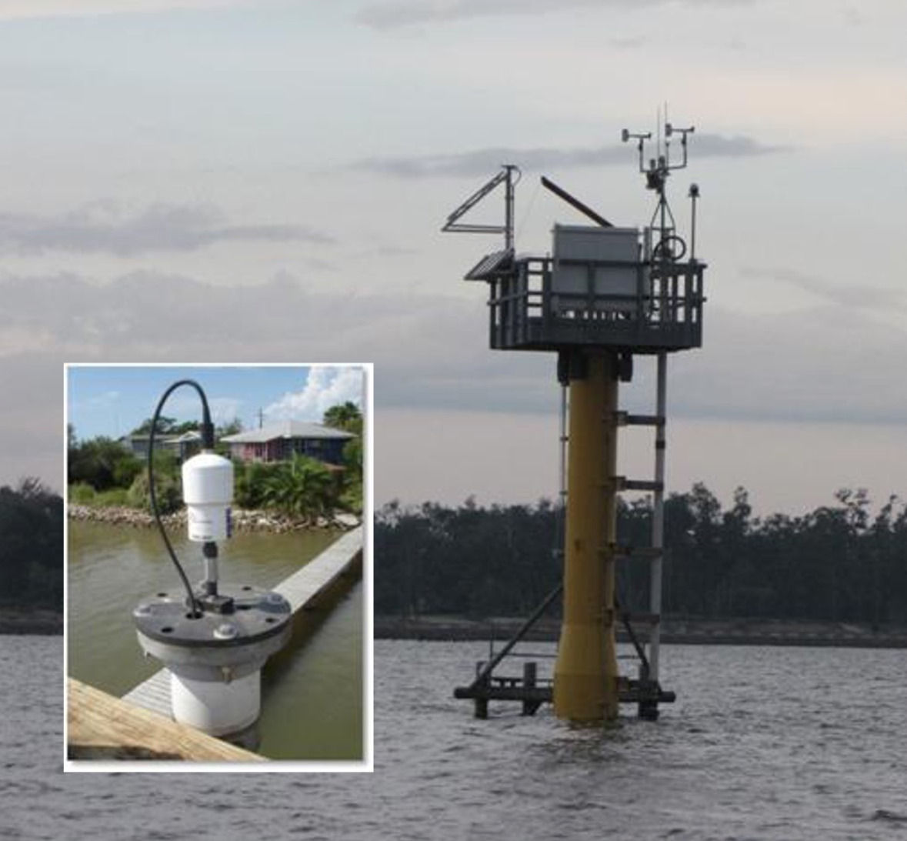
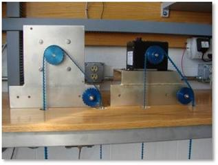
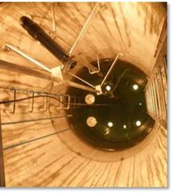
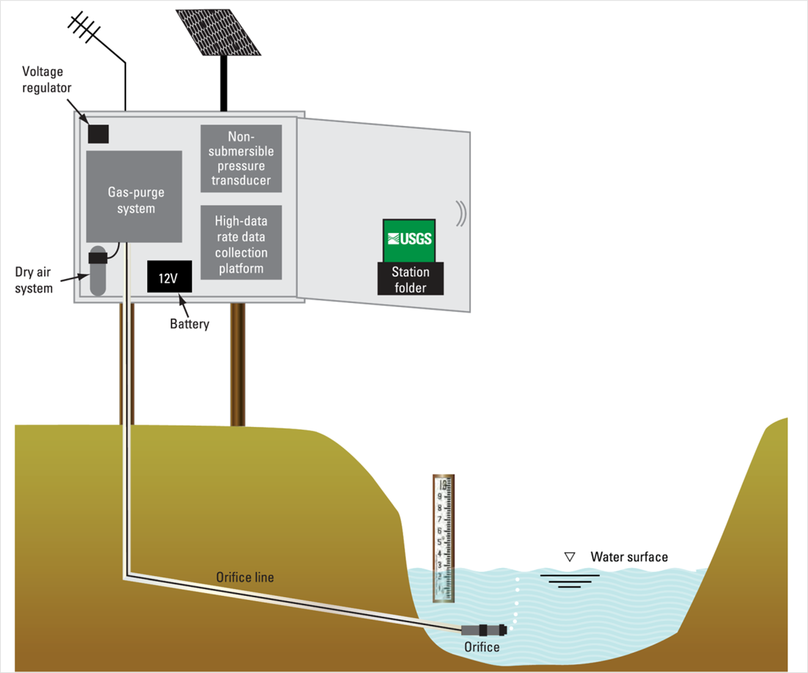
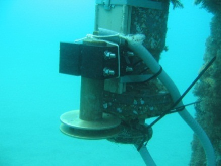
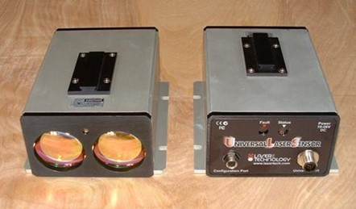
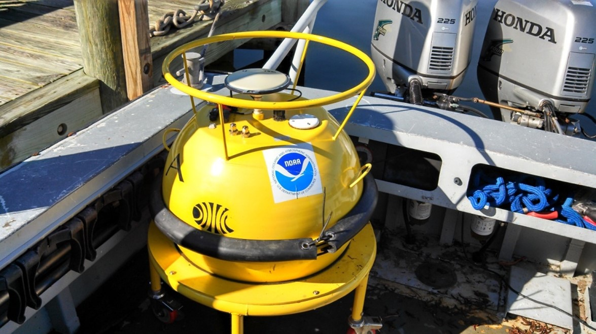
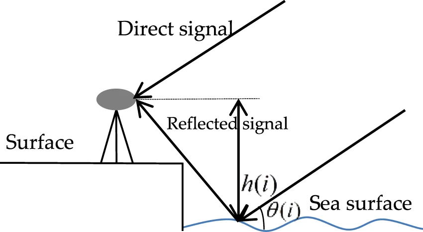
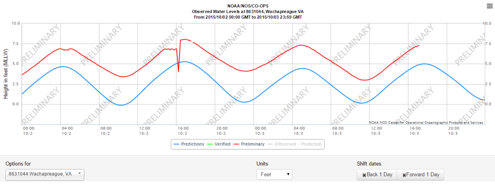

Manual for Real-Time Quality Control of Water Level Data
A Guide to Quality Control and Quality Assurance for Water Level Observations
https://doi.org/10.25923/vpsx-dc82
Acknowledgements
We are grateful to our entire Water Level Data Quality Control Manual team, which is listed in appendix A. Special thanks go to those who served on the initial Water Level Data Quality Control Manual Committee and provided content and suggestions for the initial draft, as well as all who reviewed each draft and provided valuable feedback.
Special thanks go to Dr. Cristina Forbes (NOAA/National Ocean Service/National Hurricane Center), Bob Heitsenrether (NOAA//NOS/Center for Operational Oceanographic Products and Services), Rob Loesch (NOAA/NOS/Center for Operational Oceanographic Products and Services), Peter Stone (NOAA/NOS/Center for Operational Oceanographic Products and Services), Manoj Samant (NOAA/NOS/Center for Operational Oceanographic Products and Services), and Richard Bouchard (NOAA/National Weather Service/National Data Buoy Center) for their extensive reviews and valuable input to Version 2.0.
We are grateful to those who provided reviews and input to Version 2.1, including Lindsay Abrams (NOAA/NOS/Center for Operational Oceanographic Products and Services), Gregory Dusek (NOAA/Center for Operational Oceanographic Products and Services), Robert Heitsenrether (NOAA/Center for Operational Oceanographic Products and Services), Peter Stone (NOAA/ Center for Operational Oceanographic Products and Services), Jacquelyn Overbeck (Alaska Department of Natural Resources), Julia Powell (NOAA/Office of Coast Survey), Greg Seroka (NOAA/Office of Coast Survey), and Shep Smith (NOAA/Office of Coast Survey). We are especially grateful to Matthew Widlansky (University of Hawaii Sea Level Center) for his enthusiastic and detailed review. We also thank George Mungrov and Aaron Sweeney (both at the NOAA / National Centers for Environmental Information) for their thoughts and suggestions.
Acronyms and Abbreviations
| ACT | Alliance for Coastal Technologies |
| AOOS | Alaska Ocean Observing System |
| CARICOOS | Caribbean Coastal Ocean Observing System |
| CeNCOOS | Central and Northern California Ocean Observing System |
| CO-OPS | Center for Operational Oceanographic Products and Services |
| DQAP | Data Quality and Assurance Procedure |
| GCOOS | Gulf of Mexico Coastal Ocean Observing System |
| GLOS | Great Lakes Observing System |
| GLOSS | Global Sea Level Observing System |
| GMT | Greenwich Mean Time |
| GNSS | Global Navigation Satellite System |
| GPS | Global Positioning System |
| IOC | Intergovernmental Oceanographic Commission |
| IOOS | Integrated Ocean Observing System |
| MARACOOS | Mid-Atlantic Regional Association Coastal Ocean Observing System |
| NANOOS | Northwest Association of Networked Ocean Observing Systems |
| NERACOOS | Northeastern Regional Association of Coastal Ocean Observing Systems |
| NIST | National Institute of Standards and Technology |
| NOAA | National Oceanic and Atmospheric Administration |
| NOS | National Ocean Service |
| NWLON | National Water Level Observation Network |
| OSTEP | Ocean Systems Test and Evaluation Program |
| PacIOOS | Pacific Islands Ocean Observing System |
| PVC | Polyvinyl Chloride |
| QARTOD | Quality-Assurance/Quality Control of Real-Time Oceanographic Data |
| QA | Quality Assurance |
| QC | Quality Control |
| SCCOOS | Southern California Coastal Ocean Observing System |
| SD | Standard Deviation |
| SECOORA | Southeast Coastal Ocean Observing Regional Association |
| UK | United Kingdom |
| UNESCO | United Nations Organization for Education, Science, and Culture |
| UTC | Coordinated Universal Time |
| USGS | United States Geological Survey |
| WL | Water Level |
Definitions of Selected Terms
This manual contains several terms whose meanings are critical to those using the manual. These terms are included in the following table to ensure that the meanings are clearly defined.
| Codable Instructions | Codable instructions are specific guidance that can be used by a software programmer to design, construct, and implement a test. These instructions also include examples with sample thresholds. |
| Data Record | A data record is one or more messages that form a coherent, logical, and complete observation. |
| Datum | For marine applications, datum is a base elevation used as a reference from which to reckon heights or depths. It is called a tidal datum when defined in terms of a certain phase of the tide (Gill and Schultz 2001). |
| Leveling | Leveling is the determination of the elevation differences between bench marks, to extend vertical control and monitor the stability of the water level measurement gauge. The quality of leveling is a function of the procedures used, the sensitivity of the leveling instruments, the precision and accuracy of the rod, the attention given by surveyors, and the refinement of the computations\ |
| (Gill and Schultz 2001). | |
| Message | A message is a standalone data transmission. A data record can be composed of multiple messages. |
| Operator | Operators are individuals or entities who are responsible for collecting and providing data. |
| Quality Assurance (QA) | QA involves processes that are employed with hardware to support the generation of high quality data (section 2.0 and appendix A). |
| Quality Control (QC) | QC involves follow-on steps that support the delivery of high quality data and requires both automation and human intervention (section 3.0). |
| Real-Time | Real-time means that: data are delivered without delay for immediate use; time series extends only backwards in time, where the next data point is not available; and sample intervals may range from a few seconds to a few hours or even days, depending upon the sensor configuration (section 1.0). |
| Threshold | Thresholds are limits that are defined by the operator. |
| Variable | An observation (or measurement) of physical or biogeochemical properties within oceanographic and/or meteorological environments. |
1.0 Background and Introduction
The U.S. Integrated Ocean Observing System (IOOS®) has a vested interest in collecting high-quality data for the 34 core variables (https://ioos.noaa.gov/about/ioos-by-the-numbers) measured on a national scale. In response to this interest, U.S. IOOS continues to establish written, authoritative procedures for the quality control (QC) of real-time data through the Quality Assurance/Quality Control of Real-Time Oceanographic Data (QARTOD) program, addressing each variable as funding and requirements permits. This water level (WL) manual was first published in May 2014 as the fifth in a series of guidance documents that address QC of real-time data of each core variable. It was the fifth manual to be updated (2016) and is now the fifth manual to receive a second update.
Please refer to https://ioos.noaa.gov/project/qartod/ for the following documents.
- U.S. Integrated Ocean Observing System, 2017. U.S IOOS QARTOD Project Plan - Accomplishments for 2012--2016 and Update for 2017--2021. 48 pp. https://doi.org/10.7289/V5JQ0Z71.
- U.S. Integrated Ocean Observing System, 2018. Manual for Real-Time Quality Control of Dissolved Oxygen Observations Version 2.1: A Guide to Quality Control and Quality Assurance for Dissolved Oxygen Observations in Coastal Oceans. 53 pp. https://doi.org/10.25923/q0m1-d488
- U.S. Integrated Ocean Observing System, 2019. Manual for Real-Time Quality Control of In-Situ Surface Wave Data Version 2.1: A Guide to Quality Control and Quality Assurance of In- Situ Surface Wave Observations. 69 pp. https://doi.org/10.25923/7yc5-vs69
- U.S. Integrated Ocean Observing System, 2019. Manual for Real-Time Quality Control of In-Situ Current Observations Version 2.1 A Guide to Quality Control and Quality Assurance of Acoustic Doppler Current Profiler Observations. 54 pp. https://doi.org/10.25923/sqe9-e310
- U.S. Integrated Ocean Observing System, 2020. Manual for Real-Time Quality Control of In-situ Temperature and Salinity Data Version 2.1: A Guide to Quality Control and Quality Assurance of In-situ Temperature and Salinity Observations. 50 pp. https://doi.org/10.25923/x02m-m555
- U.S. Integrated Ocean Observing System, 2017. Manual for Real-Time Quality Control of Wind Data Version 1.1: A Guide to Quality Control and Quality Assurance of Coastal and Oceanic Wind Observations. 47 pp. https://doi.org/10.7289/V5FX77NH.
- U.S. Integrated Ocean Observing System, 2017. Manual for Real-Time Quality Control of Ocean Optics Data Version 1.1: A Guide to Quality Control and Quality Assurance of Coastal and Oceanic Optics Observations. 49 pp. https://doi.org/10.25923/v9p8-ft24.
- U.S. Integrated Ocean Observing System, 2018. Manual for Real-Time Quality Control of Dissolved Nutrients Data Version 1.1: A Guide to Quality Control and Quality Assurance of Coastal and Dissolved Nutrients Observations. 56 pp. https://doi.org/10.7289/V5TT4P7R
- U.S. Integrated Ocean Observing System, 2016. Manual for Real-Time Quality Control of High Frequency Radar Surface Currents Data Version 1.0: A Guide to Quality Control and Quality Assurance of High Frequency Radar Surface Currents Data Observations. 60 pp. https://doi.org/10.7289/V5T43R96
- U.S. Integrated Ocean Observing System, 2017. Manual for Real-Time Quality Control of Phytoplankton Data Version 1.0: A Guide to Quality Control and Quality Assurance of Phytoplankton Data Observations. 67 pp. https://doi.org/10.7289/V56D5R6S
- U.S. Integrated Ocean Observing System, 2017. Manual for Real-Time Quality Control of Passive Acoustics Data Version 1.0: A Guide to Quality Control and Quality Assurance of Passive Acoustics Observations. 43 pp. https://doi.org/10.7289/V5PC30M9
- U.S. Integrated Ocean Observing System, 2018. Manual for Real-Time Quality Control of Stream Flow Data Version 1.0: A Guide to Quality Control and Quality Assurance of Stream Flow Observations in Rivers and Streams. 46 pp. https://doi.org/10.25923/gszc-ha43
- U.S. Integrated Ocean Observing System, 2019. Manual for Real-Time Quality Control of pH Data Version 1.0: A Guide to Quality Control and Quality Assurance of pH Data Observations. 56 pp. https://doi.org/10.25923/111k-br08
Please reference this document as:
U.S. Integrated Ocean Observing System, 2021. Manual for Real-Time Quality Control of Water Level Data Version 2.1: A Guide to Quality Control and Quality Assurance of Water Level Observations. 47 pp. <https://doi.org/10.25923/vpsx-dc82>
This manual is a living document that reflects the state-of-the-art QC testing procedures for water level observations. It is written for the experienced operator but also provides examples for those who are just entering the field.
2.0 Purpose/Constraints/Applications
The following sections describe the purpose of this manual, as well as the constraints that operators may encounter when performing QC of WL data and specific applications of those data.
2.1 Purpose
The purpose of this manual is to provide guidance to the U.S. IOOS and the WL community at large for the real-time QC of WL measurements using an agreed-upon, documented, and implemented standard process. This manual is also a deliverable to the U.S. IOOS Regional Associations and the ocean observing community and represents a contribution to a collection of core variable QC documents.
WL observations covered by these test procedures are collected in oceans and lakes in real time or near-real time. These tests are based on guidance from QARTOD workshops (QARTOD 2003-2009) and draw from existing expertise in programs such as the National Oceanic and Atmospheric Administration National Ocean Service (NOAA/NOS) National Water Level Observation Network (NWLON) (Nault 2004), the University of Hawaii Sea Level Center, and the Global Sea Level Observing System (GLOSS). The Global Climate Observing System recognizes GLOSS as one of the international operational activities that provides essential sea level climate data. The GLOSS Global Core Network is comprised of 290 globally distributed sea level stations (23 in the U.S.) (GLOSS 2012).
This manual differs from existing QC procedures for WL in that its focus is on real-time data. It presents a series of eleven tests that operators can incorporate into practices and procedures for QC of WL measurements. These tests apply only to the in-situ, real-time measurement of WL as observed by sensors deployed on fixed platforms and not to remotely sensed WL measurements (e.g., satellite observations).
Table 2-1 shows technologies that are included and excluded in this manual.
| Technologies Included | Technologies Excluded |
|---|---|
| Microwave radar | Satellite altimetry |
| Acoustic | Lidar |
| Float/stilling well | |
| Pressure | |
| Laser | |
| Global Positioning System (GPS) buoy | |
| GNSS reflectometry |
: Table 2-1. Technologies included and excluded in this manual
These test procedures are written as a high-level narrative from which a computer programmer can develop code to execute specific tests and set data flags (data quality indicators) within an automated software program. IOOS QARTOD documentation and other QC tests, implemented in Python with notebook examples, have been developed by the community and are shared at https://github.com/ioos/ioos_qc and https://ioos.github.io/ioos_qc/. Although certain tests are recommended, thresholds can vary among operators. The tests described here are designed to support a range of WL sensors and operator capabilities. Some well-established programs with the highest standards have implemented very rigorous QC processes. Others, with different requirements, may utilize sensors with data streams that cannot support as many QC checks---all have value when used prudently. Users must understand and appropriately utilize data of varying quality, and operators must provide support by documenting and publishing their QC processes. A balance must be struck between the time-sensitive needs of real-time observing systems and the degree of rigor that has been applied to non-real-time systems by operators with decades of QC experience.
High quality marine observations require sustained quality assurance (QA) and QC practices to ensure credibility and value to operators and data users. QC and QA are interrelated, and both are important to the process. QA practices involve processes that are employed with hardware to support the generation of high quality data, such as a sufficiently accurate, precise, and reliable sensor with adequate resolution. Other QA practices include: sensor calibration; calibration checks and/or in-situ verification, including post-deployment calibration; proper deployment considerations, such as measures for corrosion control and anti-fouling; solid data communications, including accurate time stamps with time zone identification; adequate maintenance intervals; and creation of a robust quality control process. Bushnell et al. (2019) provide more information about QA, which includes issues that are not part of the scope of this manual such as post-deployment calibration (instrument verification after recovery).
QC involves follow-on steps that support the delivery of high quality data and requires both automation and human intervention. QC practices include such things as data integrity checks (format, checksum, timely arrival of data), data value checks (threshold checks, minimum/maximum rate of change), neighbor checks, climatology checks, model comparisons, signal/noise ratios, the generation of QC metadata, the verification of user satisfaction, and generation of data flags (Bushnell 2005).
The process of ensuring data quality is not always straightforward. QA/QC procedures may be specific to a sensor technology or even to a particular manufacturer's model, so the establishment of a methodology that is applicable to every sensor is challenging.
2.2 Constraints
2.2.1 Datums and Leveling Considerations
Observed water levels are reported relative to another vertical elevation that serves as a reference point or datum (Gill and Schultz 2001). Vertical datums can be a local station datum (relative only to some fixed hardware point or arbitrary value), a tidal datum (such as mean lower low water), a gravimetric datum (such as the North American Vertical Datum of 1988, based on an equipotential gravity surface commonly called the geoid), or a geodetic datum (the fundamental datum for GPS satellites and based on a mathematical model of the earth called an ellipsoid).
To monitor station stability and provide continuity when replacing a WL station, several nearby bench marks are typically installed to support level (or vertical) surveying, and the local station datum and tidal datum elevations are determined relative to them (Hailegeberel et al. 2018).1 The number of bench marks deployed depends upon the application of the operator, and as many as ten can be called for when the WL station is used for the most demanding applications, such as long-term sea level changes. Three stable bench marks are required to demonstrate stability, and more bench marks are typically required as the duration of station operation increases. Some operators consider the bench marks the most important part of a WL station, as they preserve the tidal datums established by the station long after it is gone2.
While datums and vertical leveling surveys are beyond the scope of this manual, their importance must be noted, as they are critical to the successful use of the WL data. Gradual station subsidence or rise, datum determinations, and leveling precision are not issues that can be addressed through real-time QC, but they are vitally important to the QA of the observing system and its corresponding data. It is especially critical for operators to correctly convey the datum in use to users and to include this important metadata with every water level observation.
2.2.2 Data Processing Methodology
The type of sensor used to collect WL data and the system used to process and transmit the WL measurements determine which QC algorithms are used. In-situ systems with sufficient onboard processing power within the sensor may process the original (raw) data and produce derived products. Many sensors may sample at high-rate or burst mode (e.g., 1 Hz or greater). These samples are used to produce the actual real-time value transmitted (e.g., 6-minute value). Statistical information about the high rate sample distributions can also be used and transmitted as real-time QC parameters (e.g., sample standard deviations and outliers). If ample transmission capability is available, the entire original data stream may be transmitted and subsequently quality controlled from there. Therefore, because operators have different data processing methodologies, three levels of QC are proposed: required, strongly recommended, and suggested.
2.2.3 Traceability to Accepted Standards
To ensure that WL sensors produce accurate data, rigorous calibrations and calibration checks must be performed in addition to QC checks. Most operators rely upon manufacturer calibrations and conduct calibration checks only before deployment. These calibration checks are critical to ensuring that the manufacturer calibration is still valid. Manufacturers describe how to conduct these calibration checks in their user manuals.
Calibrations and calibration checks must be traceable to accepted standards. The National Institute of Standards and Technology (NIST) (http://www.nist.gov/index.html), a provider of internationally accepted standards, is often the source for accepted standards. Calibration activities must be tailored to match data use and resources. Calibration cost and effort increase dramatically as accuracy requirements increase. Fundamental NIST standards such as length, temperature, and pressure will suffice when conducting calibration checks on most WL sensors.
2.2.4 Sensor Deployment Considerations and Hardware Limitations
WL sensors can be deployed in several ways. Most sensors are fixed to platforms that are designed to ensure minimal vertical or horizontal movement, and they observe the water level from below, at, or above the surface. Pressure sensors may be directly submerged or configured within a bubbler system to observe the back pressure. GPS buoys, which measure water elevation derived from a GPS antenna position, have recently been used operationally; this technology should improve as GPS accuracy and real-time processing capability improve. Acoustic and microwave sensors are examples of WL sensors measuring from above the surface.
While outside the scope of the real-time tests described in this manual, QA is critical to data quality. Sensors require attention to proper QA measures both before and after the deployment. Operators must follow the manufacturer's recommendations for factory calibration schedules and proper sensor maintenance.
The following sections describe the sensor technologies that are most often used, with a brief note about their attributes and shortcomings.
Microwave Radar
Microwave radar altimeters have become popular within the past decade as this technology has evolved (Park et al. 2014). While free of many of the drawbacks of other WL sensors, microwave radar technology brings new modes of failure, such as the inability to measure water levels in the presence of ice and surprise occasional problems such as a bee's nest in the sensor horn. Figure 2-1 shows an example of a Xylem/Design Analysis H3611 microwave water level sensor installation by the NOS Center for Operational Oceanographic Products and Services (CO-OPS).

Acoustic
Acoustic altimeters typically use a sounding tube but can also operate in open air. They are sensitive to variations in the speed of sound caused by temperature changes and temperature gradients along the acoustic transmission path. Sounding tubes may become obstructed with biota or ice, causing errors in the measurements. Effects of waves and currents have been partially mitigated using protective wells and orifice configurations (which may be expensive to install and maintain, depending on the project). Figure 2-2 shows a single-pile NOS/CO-OPS installation using an acoustic sensor. The inset depicts an Aquatrak sensor mounted atop a sounding tube in a protective well.

Float/Stilling Wells
Floats deployed in stilling wells are an old and proven technology. These systems can be fortified to operate in the presence of ice, but they are expensive to install. Intakes can become clogged with sediment, and the mechanisms used to transfer the float elevation to sensors (e.g., shaft-angle encoders) can have unique failure modes. Stilling wells in tidal areas are known to cause significant error in WL observations in the presence of high waves and currents. Figure 2-3 shows a typical NOS/CO-OPS Great Lakes installation of dual shaft-angle encoders and their respective floats deployed in the stilling well, also referred to as the sump. Sumps are large stilling wells that have an intake valve used to dampen wave action that might be transferred through the intake pipe to the sump.


Pressure Sensors
Pressure sensors can be immune to ice, but pressure readings must be adjusted for variations in barometric pressure and water density in real time as part of the conversion to derived real-time water level measurements. Pressure sensors can be vented to the atmosphere to automatically account for variations in atmospheric pressure; however, water density variations still must be accounted for. Sensor drift can be an issue for low-quality sensors, and moisture damage in the air tube is a common failure mode. Allowance for gravity variations must also be made at each installation site. Figure 2-4 provides a generalized schematic of a typical pressure sensor installation as used by the U.S. Geological Survey (USGS) and many others. The back pressure observed by a sensor that is not submerged yields a much more robust system. Figure 2-5 shows a typical NOS/CO-OPS backup pressure sensor orifice installation, which includes the use of parallel plates to reduce draw-down in the presence of currents.


Lasers
Infrared laser altimeters reflect well from the sea surface, and sensor performance has improved while costs have decreased. However, performance in fog and heavy rain may not be optimum. The sensors are also affected by high waves and ice or other obstructions in the laser path. Figure 2-6 shows an infrared laser used by NOS/CO-OPS as a redundant bridge air gap sensor.

GPS Buoys
The accuracy of elevations derived by GPS continues to improve as enhancements are made to national and international global navigation satellite systems (GNSS). The location of the GPS sensor reference point must be calibrated to reflect the water level on the buoy. The onboard processing system must use a tilt-motion sensor to account for wave action. Mooring configurations must be designed to mitigate effects of high currents. Water density variations and bio-fouling can also create biases by varying the float plane of the buoy. GPS data processing is complicated for real-time application and may require shore-based systems for real-time kinematic deployments. Technology-specific QC checks based upon GNSS parameters, such as Positional Dilution of Precision, number of satellites in view, and ephemeris update rates, will be added as this capability evolves. Figure 2-7 shows a GPS buoy on the deck of a small vessel getting ready for deployment. This particular buoy does not provide real-time water level data and requires post-processing of the GPS data. However, real-time information is obtained on buoy performance and operational status. Although a GPS buoy system has been recently approved by NOAA/NOS for some operational applications, real-time processing of water level data using GNSS parameters is still under development; associated QC guidelines will be addressed in the future.

GNSS reflectometry
Ground-based Global Navigation Satellite System Reflectometry (GNSS-R) has the potential to become a viable source of operational coastal WL observations. Comparisons between the direct GPS signal and the signal reflected from the sea surface are used to derive a WL measurement (Figure 2-8). Studies comparing GNSS-R WL measurements with co-located traditional WL gauges yield correlation coefficients greater than 0.9 and root mean square errors smaller than 5 cm (Geremia-Nievinski et al. 2020).

2.3 Applications of WL Data
Real-time water levels are important for a wide variety of applications, including:
- Hydrographic and shoreline mapping surveys
- Safe vessel transit (draft/air gap, e.g., IHO S-104 [IHO 2017, in development])
- Safe vessel docking and close-in maneuvering
- Commercial fishing
- Recreational activities
- Storm surge/inundation/evacuation
- Tsunami and meteotsunami detection
- Coastal construction
- Coastal zone management
- Harbor, channel, and inlet maintenance
- Operation of coastal engineering structures
- Input into operational nowcast/forecast system (models) runs
- Validation and verification of numerical ocean models
- Understanding the impacts of long-term sea level variability and inundation on coastal habitats
- Monitoring agreements, memorandums of understanding, and treaties (e.g., the International Great Lakes Datum)
Other applications, such as monthly and annual mean water levels and Federal Emergency Management Agency Flood Insurance Rate Maps, do not require real-time QC but benefit from it through early detection of WL station issues.
2.4 Other Important Considerations
While outside the scope of the real-time tests described in this manual, quality assurance (QA) is critical to data quality. Sensors require attention to proper QA measures both before and after the deployment. Bushnell et al. (2019) provide a more comprehensive review of QA processes, including several example checklists in the Supplementary Material. Operators must follow the manufacturer's recommendations for factory calibration schedules and proper sensor preparation and maintenance.
Also important, but beyond the scope of this document at present, is the determination and reporting of data uncertainty. Knowledge of the accuracy of each observation is required to ensure that data are used appropriately and aids in the computation of error bounds for subsequent products derived by users. All sensors and measurements contain errors that are determined by hardware quality, calibration accuracy, methods of operation, and data processing techniques. Operators should routinely provide a quantitative measure of data uncertainty in the associated metadata. Such calculations can be challenging, so operators should also document the methods used to compute the uncertainty (e.g., Seitz et al. 2021). The limits and thresholds implemented by operators for the data QC tests described here are a key component in establishing the observational error bounds. Operators are strongly encouraged to consider the impact of the QC tests on data uncertainty, as these two efforts greatly enhance the utility of their data.
Sensor redundancy is key to obtaining reliable measurements and ensuring that uncertainties can be assigned to those measurements. Comparing two adjacent instruments can assist in evaluation of data quality, as well as provide two (or more) independent estimates of a parameter of interest.
3.0 Quality Control
The real-time QC of WL observations can be extremely challenging. Events such as storm surge, tsunamis, and strong winds can affect water levels and must be considered when determining acceptable data thresholds. Human involvement is therefore important to ensure that solid scientific principles are applied to data evaluation to ensure that good data are not discarded, and bad data are not distributed (e.g., selection of appropriate thresholds and examination of data flagged as questionable).
To conduct real-time QC on WL observations, the first pre-requisite is to understand the science and context within which the measurements are being conducted. For example and as was discussed in section 2.2.4, sensors can be deployed in a number of ways. Each deployment method imposes the need for specific QC methods, with different interpretations of 'real time.' Real-time WL data should have two main attributes: accurate time and accurate elevation relative to a known reference.
This manual focuses specifically on real-time data. For example, for real-time QC, gradual calibration changes or system responses (sensor drift) cannot be detected or corrected. Drift correction for WL measurements during post-processing is difficult even if a valid post-recovery calibration could be obtained. Drift is often caused by bio-fouling, silting/sediment clogging, etc. and affects different systems in different ways (e.g., a sensor's response will be affected by the added mass of bio-fouling). Another example is the ability of some data providers to backfill data gaps. In both of these examples, the observations are not considered to be real time for purposes of QC checks. (However, in some sophisticated 24/7 QC operations, real-time dissemination may be switched from one sensor to another based on real-time QC flags.)
3.1 QC Flags
Data are evaluated using QC tests, and the results of those tests are recorded by inserting flags in the data files. Table 3-1 provides a simple set of flags and associated descriptions. Additional flags may be incorporated to provide more detailed information to assist with troubleshooting. For example, an observation may fail the water level min/max test and be flagged as having failed. If the data failed the water level min/max by exceeding the upper limit, a "failed high" flag may indicate that the values were higher than the expected range. Such detailed flags primarily support maintenance efforts and are presently beyond U.S. IOOS requirements for QC of real-time data. For additional information regarding flags, see the Manual for the Use of Real-Time Oceanographic Data Quality Control Flags (U.S. IOOS 2020) posted on the U.S. IOOS QARTOD website. However, all flags must be identified and defined in the metadata.
Further post processing of the data may yield different conclusions from those reached during initial assessments. Flags set in real-time should not be changed, ensuring that historical documentation is preserved. Results from post processing should generate another set of flags corresponding to a revised version of the data.
In the test codable instructions provided, the time series of observations is time ordered, and the most recent observation is \(n_0\), preceded by a value at \(n_{-1}\), and so on moving back in time. The focus of the real-time QC is primarily on observations \(n_0\), \(n_{-1}\), and \(n_{-2}\).
| Flag | Description |
|---|---|
| Pass=1 | Data have passed critical real-time QC tests and are deemed adequate for use as preliminary data. |
| Not Evaluated=2 | Data have not been QC-tested, or the information on quality is not available. |
| Suspect or of High Interest=3 | Data are considered to be either suspect or of high interest to data providers and users. They are flagged suspect to draw further attention to them by operators. |
| Fail=4 | Data are considered to have failed one or more critical real-time QC checks. If they are disseminated at all, it should be readily apparent that they are not of acceptable quality. |
| Missing Data=9 | Data are missing; used as a placeholder. |
: Table 3-1. Flags for real-time data (UNESCO 2013)
Water level data that have been subjected to real-time QC might be referred to as Level 1 data (UNESCO/IOC 2020). Operators are encouraged to carefully define any data management level annotation they assign to data products.
3.2 Test Hierarchy
This section outlines eleven real-time QC tests for WL measurements. Operators should also consider that some of these tests can be carried out within the instrument, where thresholds can be defined in configuration files. Although more tests may imply a more robust QC effort, there are many reasons operators could use to justify not conducting some tests. In those cases, operators need only to document reasons these tests do not apply to their observations. Tests are listed in table 3-2 and are divided into three groups: those that are required, strongly recommended, or suggested. However, for some critical real-time applications with high risk operations, it may be advisable to invoke all groups.
| Group 1: Required | Test 1 | Timing/Gap Test |
| Test 2 | Syntax Test | |
| Test 3 | Location Test | |
| Test 4 | Gross Range Test | |
| Test 5 | Climatology Test | |
| Group 2: Strongly Recommended | Test 6 | Spike Test |
| Test 7 | Rate of Change Test | |
| Test 8 | Flat Line Test | |
| Group 3: Suggested | Test 9 | Multi-Variate Test |
| Test 10 | Attenuated Signal Test | |
| Test 11 | Neighbor or Forecast Test |
: Table 3-2. QC Tests in order of implementation and hierarchy
3.3 QC Test Descriptions
A variety of tests can be performed on the sensor measurements to evaluate data quality. Testing the timely arrival and integrity of the data transmission itself is a first step. If the data are corrupted during transmission, further testing may be irrelevant. The checks defined in these eleven tests evaluate data through various comparisons to other data and to the expected conditions in the given environment. The tests listed in this section presume a time-ordered series of observations and denote the most recent observation as previously described.
Some effort will be needed to select the best thresholds, which are determined at the operator level and may require multiple iterations of trial and error before final selections are made. A successful QC effort is highly dependent upon selection of the proper thresholds, which should not be determined arbitrarily but can be based on historical knowledge or statistics derived from recently acquired data. Although this manual provides some guidance for selecting thresholds based on input from various operators, it is assumed that operators have the expertise and motivation to select the proper thresholds to maximize the value of their QC effort. Operators should openly provide thresholds as metadata for user support. Elevation thresholds chosen may be dependent upon the real-time application, (e.g., chart datum or inundation threshold level). This shared information will help U.S. IOOS to document standardized thresholds that will be included in future releases of this manual.
3.3.1 Applications of QC Tests to WL Sensors
These eleven tests require operators to select a variety of thresholds. Examples are provided in the following test tables; however, operators are in the best position to determine the appropriate thresholds for their operations. Some tests rely on multiple data points most recently received to determine the quality of the latest data point. When this series of data points reveals that the entire group fails, the most recent data point is flagged, but the previous flags are not changed. This action supports the view that historical flags are generally not altered. The first example is in Test 8, the Flat Line Test, where this scenario will become clearer. The exception to the rule occurs for Test 6 Spike Check, where the most recent point must be flagged as "2 Not Evaluated" until the next point arrives, and the spike check can be performed.
Test 1 - Timing/Gap Test (Required)
Check for arrival of data.
Test determines that the most recent data point has been measured and received within the expected time window (TIM_INC) and has the correct time stamp (TIM_STMP).
Note: For those systems that do not update at regular intervals,
a large value for TIM_STMP can be assigned.
The gap check is not a solution for all timing errors.
Data could be measured or received earlier than expected.
This test does not address all clock drift/jump issues.
| Flags | Condition | Codable Instructions |
|---|---|---|
| Missing = 9 | Data have not arrived as expected. | If NOW - TIM_STMP > TIM_INC, flag = 9 |
| Suspect = 3 | N/A | N/A |
| Pass = 1 | Applies for test pass condition. | N/A |
Test Exception: None.
Test specifications to be established locally by the operator.
Example: TIM_INC = 1 hour
Test 2 - Syntax Test (Required)
Check to ensure that the message is structured properly.
Received data message (full message) contains the proper structure without any indicators of flawed transmission such as parity errors.
Possible tests are: a) the expected number of characters (NCHAR) for fixed-length messages equals the number of characters received (REC_CHAR),
or b) passes a standard parity bit check,
cyclic redundancy check,
etc.
Many such syntax tests exist, and the user should select the best criteria for one or more syntax tests.
Capabilities for dealing with flawed messages vary among operators;
some may have the ability to parse messages to extract data within the flawed message sentence before the flaw.
A syntax check is performed only at the message level and not within the message content.
In cases where a data record requires multiple messages,
this check can be performed at the message level but is not used to check message content.
| Flags | Condition | Codable Instructions |
|---|---|---|
| Fail = 4 | Data sentence cannot be parsed to provide a valid observation. | \(If REC_CHAR \neq NCHAR\), flag = 4 |
| Suspect = 3 | N/A | N/A |
| Pass = 1 | Expected data sentence received; absence of parity errors. | N/A |
Test Exception: None.
Test specifications to be established locally by the operator.
Example: NCHAR = 128
Test 3 - Location Test (Required)
Check for reasonable geographic location.
Test checks that the reported present physical location (latitude/longitude) is within operator-determined limits.
The location test(s) can vary from a simple impossible location to a more complex check for displacement (DISP) exceeding a distance limit RANGEMAX based upon a previous location and platform speed.
Operators may also check for erroneous locations based upon other criteria,
such as reported positions over land,
as appropriate.
| Flags | Condition | Codable Instructions |
|---|---|---|
| Fail = 4 | Impossible location. | If LAT > abs(90) or LONG > abs(180), flag = 4 |
| Suspect = 3 | Unlikely platform displacement. | If DISP > RANGEMAX, flag = 3 |
| Pass = 1 | Applies for test pass condition. | N/A |
Test Exception: Test does not apply to fixed deployments when no location is transmitted.
Test specifications to be established locally by the operator.
Example: For a GPS buoy WL gauge,
the displacement DISP is calculated between sequential position reports,
RANGEMAX = 500 m.
Test 4 - Gross Range Test (Required)
Data point exceeds sensor or operator-selected min/max.
All sensors have a limited output range,
and this can form the most rudimentary gross range check.
No values less than a minimum value or greater than the maximum value the sensor can output
(SENSOR_MIN, SENSOR_MAX) are acceptable.
Additionally,
the operator can select a smaller span (USER_MIN, USER_MAX) based upon local knowledge or a desire to draw attention to extreme values.
NOTE: Operators may choose to flag as suspect values that exceed the calibration span but not the hardware limits (e.g., a value that sensor is not capable of producing).
| Flags | Condition | Codable Instructions |
|---|---|---|
| Fail = 4 | Reported value is outside of sensor span. | If WL n < SENSOR_MIN, or WL n > SENSOR_MAX, flag = 4 |
| Suspect = 3 | Reported value is outside of user-selected span | If WL n < USER_MIN, or WL n > USER_MAX, flag = 3 |
| Pass = 1 | Applies for test pass condition. | N/A |
Test Exception: None.
Test specifications to be established locally by the operator.
Examples:
SENSOR_MAX = 10.0 meters(limited by the manufacturer firmware, for example)SENSOR_MIN = -0.5 meterUSER_MAX = 5.0 metersUSER_MIN = -0.5 meter
Test 5 - Climatology Test (Required)
Test that data point falls within seasonal expectations.
This test is a variation on the gross range check,
where the gross range Season_MAX and Season_MIN are adjusted monthly,
seasonally,
or at some other operator-selected time period (TIM_TST).
Expertise of the local operator is required to determine reasonable seasonal averages.
Longer time series permit more refined identification of appropriate thresholds.
| Flags | Condition | Codable Instructions |
|---|---|---|
| Fail = 4 | Because of the potential for extreme water levels without regard to season, no fail flag is identified for this test. | N/A |
| Suspect = 3 | Reported value is outside the operator-identified climatology window. | If WL n < Season_MIN or WL n > Season_MAX, flag = 3 |
| Pass = 1 | Applies for test pass condition. | N/A |
Test Exception: None.
Test specifications to be established locally by operator:
A seasonal matrix of WLmax and WLmin values at all TIM_TST intervals.
Examples: SPRING_MIN = -2.0 meters, SPRING_MAX = 4.0 meters
Test 6 - Spike Test (Strongly Recommended)
Data point \(n-1\) exceeds a selected threshold relative to adjacent data points.
This check is for single-value spikes,
specifically the value at point \(n-1\).
Spikes consisting of more than one data point are difficult to capture,
but their onset may be flagged by the rate of change test.
The spike test consists of two operator-selected thresholds,
THRSHLD_LOW and THRSHLD_HIGH.
Adjacent data points (\(n_{-2}\) and \(n_0\)) are averaged to form a spike reference (SPK_REF).
The absolute value of the spike is tested to capture positive and negative spikes.
Large spikes are easier to identify as outliers and flag as failures.
Smaller spikes may be real and are only flagged suspect.
The thresholds may be fixed values or dynamically established
(for example, a multiple of the standard deviation over an operator-selected period).
An alternative is a third difference test defined as \(Diff_n = WL_{n-3} -3 * WL_{n-2} + 3 * WL_{n-1} - WL_n\).
| Flags | Condition | Codable Instructions |
|---|---|---|
| Fail = 4 | High spike threshold exceeded. | If abs(WL_{n-1} - SPK_REF) > THRSHLD_HIGH, flag = 4 |
| Suspect = 3 | Low spike threshold exceeded. | If abs(WL_{n-1} - SPK_REF) > THRSHLD_LOW and abs(WL_{n-1} - SPK_REF) ≤ THRSHLD_HIGH, flag=3 |
| Pass = 1 | Applies for test pass condition. | N/A |
Test Exception: None.
Test specifications to be established locally by the operator.
Examples: THRSHLD_LOW = 0.1 meter, THRSHLD_HIGH = 0.2 meter
Test 7 - Rate of Change Test (Strongly Recommended)
Excessive rise/fall test.
This test inspects the time series for a time rate of change that exceeds a threshold value identified by the operator. WL values can change substantially over short periods in some locations, hindering the value of this test. A balance must be found between a threshold set too low, which triggers too many false alarms, and one set too high, making the test ineffective. Test implementation can be challenging. Upon failure, it is unknown which point is bad. Further, upon failing a data point, it remains to be determined how the next iteration can be handled. The following suggest two ways to select the thresholds:
- The rate of change between \(WL_{n-1}\) and \(WL_n\) must be less than three standard deviations (
3*SD). TheSDof theWLtime series is computed over the previous 25-hour period (operator-selected value) to accommodate cyclical diurnal and other tidal fluctuations. The local operator determines both the number of SDs (N_DEV) and the period over which the SDs are calculated (TIM_DEV). - The rate of change between \(WL_{n-1}\) and \(WL_n\) must be less than 0.1 meter
+2SD.
| Flags | Condition | Codable Instructions |
|---|---|---|
| Fail = 4 | No fail flag is identified for this test. | N/A |
| Suspect = 3 | The rate of change exceeds the selected threshold. | If abs(WL_n - WL_{n-1}) > N_DEV*SD, flag = 3 |
| Pass = 1 | Applies for test pass condition. | N/A |
Test Exception: None.
Test specifications to be established locally by operator.
Examples: N_DEV = 3, TIM_DEV = 25.
Some operators use station-specific values,
ranging from about 0.02 meter/6-minute sample,
to about 0.50 meter/ 6-minute sample.
Test 8 - Flat Line Test (Strongly Recommended)
Invariant value.
When some sensors and/or data collection platforms fail,
the result can be a continuously repeated observation of the same value.
This test compares the present observation (\(n\)) to a number (REP_CNT_FAIL or REP_CNT_SUSPECT) of previous observations.
Observation \(n\) is flagged if it has the same value as previous observations within a tolerance value,
EPS,
to allow for numerical round-off error.
Note that historical flags are not changed.
| Flags | Condition | Codable Instructions |
|---|---|---|
| Fail = 4 | When the five most recent observations are equal, \(T_n\) is flagged fail. | For i=1, REP_CNT_FAIL, If WL_n - WL_{n-i} < EPS, flag = 4 |
| Suspect = 3 | It is possible but unlikely that the present observation and the two previous observations would be equal. When the three most recent observations are equal, \(T_n\) is flagged suspect. | For i=1, REP_CNT_SUSPECT, If WL_n - WL_{n-i} < EPS, flag = 3 |
| Pass = 1 | Applies for test pass condition. | N/A |
Test Exception: Some lakes or estuaries may experience prolonged invariant water level observations.
Test specifications to be established locally by the operator.
Examples: REP_CNT_FAIL = 5, REP_CNT_SUSPECT = 3, EPS = 0.001 meter
Test 9 - Multi-Variate Test (Suggested)
Comparison to other variables.
This is an advanced family of tests,
starting with the simpler test described here and anticipating growth towards full co-variance testing in the future.
It is doubtful that anyone is conducting tests such as these in real time.
As these tests are developed and implemented,
they should be documented and standardized in later versions of this manual.
This example pairs rate of change tests as described in Test 7.
The WL rate of change test is conducted with a more restrictive threshold (N_WLMV_DEV).
If this test fails,
a second rate of change test operating on a second variable
(wind would be the most probable)
is conducted.
The absolute value rate of change should be tested, since the relationship between WL and the second variable may be indeterminate.
If the rate of change test on the second variable fails to exceed a threshold
(e.g., an anomalous step is found in WL and is lacking in wind),
then the \(WL_n\) value is flagged.
| Flags | Condition | Codable Instructions |
|---|---|---|
| Fail = 4 | No fail flag is identified for this test. | N/A |
| Suspect = 3 | \(WL_n\) fails the rate of change and the second variable (WS wind speed, for example) does not exceed the rate of change. |
\(If abs(WL_n - WL_{n-1}) > N_WLMV_DEV * SD_WL\) AND \(abs(WS_n - WS_{n-1}) < N_WS_DEV * SD_WS\), flag = 3 |
| Pass = 1 | \(WL_n\) fails the rate of change and the second variable (WS wind speed, for example) also exceeds the rate of change. | \(If abs(WL_n - WL_{n-1}) > N_WLMV_DEV * SD_WL\) AND \(abs(WS_n - WS_{n-1}) > N_WS_DEV * SD_WS\), flag = 1 |
Test Exception: None.
Test specifications to be established locally by the operator.
Examples: N_WLMV_DEV=2, N_WS_DEV=2, TIM_DEV=25 hours
NOTE: In a more complex case, more than one secondary rate of change test can be conducted. Wave height or current speed are possible secondary candidates and could be checked for anomalous rate of change values. In this case, a knowledgeable operator may elect to assign a pass flag to a high rate of change observation when any one of the secondary variables also exhibits a high rate of change. Such tests border on modeling, should be carefully considered, and may be beyond the scope of this effort.
The QARTOD WL committee recognized the high value in full co-variance testing but also noted the challenges. Such testing remains a research project not yet ready for operational implementation.
Test 10 - Attenuated Signal Test (Suggested)
A test for inadequate variation of the time series.
A common sensor failure mode can provide a data series that is nearly but not exactly a flat line
(e.g., if a well orifice becomes wrapped in debris).
This test inspects for an SD value or a range variation (MAX-MIN) value that fails to exceed threshold values
(MIN_VAR_WARN, MIN_VAR_FAIL)
over a selected time period (TST_TIM).
| Flags | Condition | Codable Instructions |
|---|---|---|
| Fail = 4 | Variation fails to meet the minimum threshold MIN_VAR_FAIL. |
If During TST_TIM, SD < MIN_VAR_FAIL, or During TST_TIM, MAX-MIN < MIN_VAR_FAIL, flag = 4 |
| Suspect = 3 | Variation fails to meet the minimum threshold MIN_VAR_WARN. |
If During TST_TIM, SD < MIN_VAR_WARN, or During TST_TIM, MAX-MIN < MIN_VAR_WARN, flag = 3 |
| Pass = 1 | Applies for test pass condition. | N/A |
Test Exception: None.
Test specifications to be established locally by the operator.
Examples: TST_TIM=12 hours MIN_VAR_WARN=0.5 meter, MIN_VAR_FAIL=0.1 meter
Test 11 - Neighbor or Forecast Test (Suggested)
Comparison to nearby sensors.
This check has the potential to be the most useful test when a nearby second sensor is determined to have a similar response, or a water level forecast (tide predictions or model output) is available.
Ideally, redundant sensors utilizing different technology would be co-located and alternately serviced at different intervals. This close neighbor would provide the ultimate QC check, but cost may prohibit such a deployment in most cases.
However, there are few instances where a second sensor is sufficiently proximate to provide a useful QC check. WL observations are more readily compared to adjacent sites than many non-conservative observations (such as dissolved oxygen, for example), and this test should not be overlooked where it may have application.
This test is the same as Test 9, Multi-Variate Check - comparison to other variables where the second variable is the second sensor. The selected thresholds depend entirely upon the relationship between the two sensors as determined by the local knowledge of the operator.
In the instructions and examples below,
data from one site (WL1) are compared to a second site,
sensor,
or forecast (WL2).
The difference between the two observations is compared to operator-defined difference suspect (WL_SUSPECT_DIFF) and fail (WL_FAIL_DIFF) thresholds.
An operator could also use this test to apply spike,
rate-of-change,
flat-line,
and attenuated signal comparisons.
| Flags | Condition | Codable Instructions |
|---|---|---|
| Fail = 4 | The difference between WL1n and WL2n is greater than the fail threshold. | If abs(WL1n - WL2n) > WL_FAIL_DIFF, flag = 4 |
| Suspect = 3 | The difference between WL1n and WL2n is greater than the suspect threshold and less than or equal to the fail threshold. |
If abs(WL1n - WL2n) > WL_SUSPECT_DIFF AND abs(WL1n - WL2n) ≤ WL_FAIL_DIFF, flag = 3 |
| Pass = 1 | The difference between WL1n and WL2n is less than or equal to the suspect threshold. |
If abs(WL1n - WL2n) ≤ WL_SUSPECT_DIFF, flag = 1 |
Test Exception: There is no adequate neighbor or forecast.
Test specifications to be established locally by the operator.
Examples:
WL_SUSPECT_DIFF = 3 cmWL_FAIL_DIFF = 5 cm
3.3.2 Examples of Test Applications
Figure 3-1 shows several examples of bad data these tests are capable of detecting3. The first high tide on 10/02/2015 at about 04:00 GMT exceeded the highest water level observation this gauge is capable of observing, and the bad data would be identified by:
- Test 4 - Gross Range Test, which uses operator-identified thresholds.
- Test 5 - Climatology Test, which uses more restrictive thresholds than the Gross Range Test and would also detect these out-of-range data.
- Test 8 - Flat Line Test, where the small, superimposed signal shown on the clipped observations seen on 10/ 0 2 between 14:00 and 16:00 GMT demonstrates the need for a properly operator-identified tolerance value,
EPS. - Test 10 - Attenuated Signal Test, if suitable test thresholds for this station are incorporated.
- Test 11 - Neighbor or Forecast Test, which describes the use of water level forecasts as a 'virtual neighbor' against which these faulty observations would be detected.
The second high tide on 10/02/2015 at about 16:00 exhibits the same clipped peak, which would be detected with these five tests. It also shows several further faults where additional tests would identify bad data. They are:
- Test 6 - Spike Test would capture the negative-going spike, incurred when switching to the redundant sensor.
- Test 7 - Rate of Change Test would detect the large recovering step up from the spike.
Further, shortly after this negative-going spike:
- Test 1 - Timing/Gap Test, where the small gap shortly after this second high tide (perhaps difficult to see) would be readily flagged as missing from these 6-minute observations.

3.3.3 Potential for Real-Time QC Embedded in Field Equipment
In many instances, real-time QC tests are embedded within the firmware of an instrument. For example, CO-OPS uses an embedded algorithm called the Data Quality and Assurance Procedure (DQAP) (NOAA 2013). Embedding QC tests is desirable for the operators because it reduces the amount of work required to ensure high quality data. It can also speed the detection of a system failure and subsequent repair, potentially improving data return and reducing costs. It has been suggested (Bushnell 2017) that all eleven of the tests described here could be embedded in an intelligent instrument. As networks of water level sensors expand and the technology provided by the Internet of Things is employed, the potential for increased embedded QC can be expected.
4.0 Summary
The QC tests in this WL manual have been compiled using the guidance provided by all QARTOD workshops (QARTOD 2003-2012) and subsequent updates of other manuals. Test suggestions came from both operators and WL data users with extensive experience. The considerations of operators who ensure the quality of real-time data may be different from those whose data are not published in real time, and these and other differences must be balanced according to the specific circumstances of each operator. Although these real-time tests are required, strongly recommended, or suggested, it is the operator who is responsible for deciding which tests are appropriate. Each operator selects thresholds based on the specific program requirements that must be met. The scope of requirements can vary widely, from complex data streams that support myriad QC checks to ensure precise and accurate measurements - to basic data streams that do not need such details. Operators must publish their QC processes via metadata so that data users can readily see and understand the source and quality of those data.
The eleven data QC tests identified in this manual apply to WL observations from a variety of sensor types and platforms that may be used in U.S. IOOS. Since several existing programs such as NWLON and GLOSS have already developed QC tests that are similar to the U.S. IOOS QARTOD tests in this manual, the QARTOD WL committee's objective is for the QC tests of these programs to comply with U.S. IOOS QARTOD requirements and recommendations. The individual tests are described and include codable instructions, output conditions, example thresholds, and exceptions (if any).
Selection of the proper thresholds is critical to a successful QC effort. Thresholds can be based on historical knowledge or statistics derived from more recently acquired data and should not be determined arbitrarily. This manual provides some guidance for selecting thresholds based on input from various operators, but also notes that operators need the subject matter expertise in selecting the proper thresholds to maximize the value of their QC effort.
Future QARTOD manuals will address standard QC test procedures and best practices for all types of common as well as uncommon platforms and sensors, for all the U.S. IOOS core variables requiring real-time QC. Some test procedures may even take place within the sensor package. Significant components of metadata will reside in the sensor and be transmitted either on demand or automatically along with the data stream. Users may also reference metadata through Uniform Resource Locators to simplify the identification of which QC steps have been applied to data. However, QARTOD QC test procedures in this manual address only real-time, in-situ observations made by sensors on fixed platforms or GPS buoys. The tests do not include post processing, which is not conducted in real-time.
Each QC manual is envisioned as a dynamic document and will be posted on the QARTOD website at https://ioos.noaa.gov/project/qartod. This process allows for QC manual updates as technology development occurs for both upgrades of existing sensors and new sensors.
5.0 References
Bushnell, M., Presentation at QARTOD III: (2005). Scripps Institution of Oceanography, La Jolla, California.
Bushnell, M. H., (2017). Integration of QARTOD Tests Within a Sensor: Considerations for Sensor Manufacturers. MTS/IEEE OCEANS'17 conference proceedings, 5 pp.
Bushnell, M., Waldmann, C., Seitz, S., Buckley, E., Tamburri, M., Hermes, J., Heslop, E., and Lara-Lopez, A, (2019). Quality Assurance of Oceanographic Observations: Standards and Guidance Adopted by an International Partnership. Front. Mar. Sci., Vol. 6. https://doi.org/10.3389/fmars.2019.00706 Supplementary Material https://www.frontiersin.org/articles/10.3389/fmars.2019.00706/full#supplementary-material
Chen, F., Liu, L. & Guo, F. Sea Surface Height Estimation with Multi-GNSS and Wavelet De-noising (2019). Sci Rep 9, 15181. https://doi.org/10.1038/s41598-019-51802-9
Geremia-Nievinski, F., Hobiger, T., Haas, R., Liu, W., Strandberg, J., Tabibi, S….Williams, S., (2020). SNR-based GNSS reflectometry for coastal sea-level altimetry: results from the first IAG inter-comparison campaign. J Geod 94, 70 (2020). https://doi.org/10.1007/s00190-020-01387-3
Gill, S. and Schultz, J., eds. (2001). Tidal Datums and Their Applications. NOAA Special Publication NOS CO-OPS 1, 132 pp. Silver Spring, Maryland. http://tidesandcurrents.noaa.gov/publications/tidal_datums_and_their_applications.pdf
Global Sea-Level Observing System (GLOSS) Implementation Plan (2012). UNESCO/IOC, 41 pp. 2012. (IOC Technical Series No.100) (English) https://unesdoc.unesco.org/ark:/48223/pf0000217832
Hailegeberel, M., Glassmire, K., Johnson, A., Samant, M., and Dusek, G., (2018). User's Guide to Vertical Control and Geodetic Leveling for CO-OPS Observing Systems, 64 pp. Center for Operational Oceanographic Products and Services, Silver Spring, Maryland. https://tidesandcurrents.noaa.gov/publications/Users_Guide_to_Vertical_Control_and_Geodetic_Leveling_for_CO-OPS_Observing_Systems-May_2018.pdf
IHO S-104, Water Level Information For Surface Navigation, (2017). https://iho.int/uploads/user/ServicesandStandards/TWCWG/MISC/S-104/S-104_Tidal_Information_for_Surface_Navigation_Product_Specification_Documents/S-104_Product_Specification-v0.0.5_Clean.pdf
NOAA (2013). NOAA, Environmental Measurement Systems Sensor Specifications and Measurement Algorithm. https://tidesandcurrents.noaa.gov/publications/CO-OPS_Measurement_Spec.pdf
Paris. Intergovernmental Oceanographic Commission of UNESCO (2013). Ocean Data Standards, Vol.3: Recommendation for a Quality Flag Scheme for the Exchange of Oceanographic and Marine Meteorological Data. (IOC Manuals and Guides, 54, Vol. 3.) 12 pp. (English) (IOC/2013/MG/54-3) http://www.nodc.noaa.gov/oceanacidification/support/MG54_3.pdf
Park, J., Heitsenrether, R., Sweet, W., (2014). Water Level and Wave Height Estimates at NOAA Tide Stations from Acoustic and Microwave Sensors. NOAA Technical Report NOS CO-OPS 075, 41 pp. Silver Spring, Maryland. QARTOD I-VI Reports (2003-2012): https://ioos.noaa.gov/ioos-in-action/qartod-meetings/
Seitz, S., Waldmann, C., Buckley, E., Bushnell, M., (2021). Uncertainty Quantification Use Case: Moored Temperature Sensor Measurement Uncertainty, 18 pp, https://doi.org/10.3389/fmars.2019.00706
UNESCO/IOC, (2020). Quality Control of in situ Sea Level Observations: A Review and Progress towards Automated Quality Control, Vol. 1. Paris, UNESCO. IOC Manuals and Guides No.83. (IOC/2020/MG/83Vol.1) https://repository.oceanbestpractices.org/bitstream/handle/11329/1348/IOC-MG-83_eo.pdf?sequence=1&isAllowed=y
U.S. Integrated Ocean Observing System, (2020). Manual for Real-Time Oceanographic Data Quality Control Flags. Version 1.2. Silver Spring, Maryland, U.S. Department of Commerce, National Oceanic and Atmospheric Administration, National Ocean Service, Integrated Ocean Observing System, 24 pp. https://repository.library.noaa.gov/view/noaa/24982
Additional References to Related Documents:
Alliance for Coastal Technologies (ACT) (2012). Accessed March 24, 2021 at http://www.act-us.info/evaluations.php
Intergovernmental Oceanographic Commission Workshop Report No. 81 (1992). Joint IAPSO-IOC Workshop on Sea Level Measurements and Quality Control Paris, 12-1 3 October 1992 http://www.jodc.go.jp/info/ioc_doc/Workshop/094204eo.pdf
National Oceanographic Partnership Program (NOPP) (January 2006). The First U.S. Integrated Ocean Observing System (IOOS) Development Plan - A report of the national Ocean Research Leadership Council and the Interagency Committee on Ocean Science and Resource Management Integration. The National Office for Integrated and Sustained Ocean Observations. Ocean US Publication No. 9. National Data Buoy Center (NDBC) Technical Document 09-02, Handbook of Automated Data Quality Control Checks and Procedures, August 2009. National Data Buoy Center, Stennis Space Center, Mississippi 39529-6000.
Nault, J., (2004). NWLON/DMS Quality Control Software (QC): Functional Requirements Document, NOAA Technical Report NOS CO-OPS 030, Silver Spring, Maryland. https://tidesandcurrents.noaa.gov/publications/NOAA_Technical_Report_NOS_CO-OPS_030_QC_requirements_doc(revised)-11102004.pdf
NOAA, (2005). Second Workshop Report on the QA of Real-Time Ocean Data, July 2005. 48 pp. Norfolk, Virginia. CCPO Technical Report Series No. 05-01 NOAA, (2009). Fifth Workshop on the QA/QC of Real-Time Oceanographic Data. November 16-19, 2009. 136 pp. Omni Hotel, Atlanta, Georgia. Ocean.US, (2006). National Office for Integrated and Sustained Ocean Observations. (2006). The First U.S. Integrated Ocean Observing System (IOOS) Development Plan, Publication 9, January 2006.
Perez, B., de Alfonso, M., Huess, V. Rickards, L., (May 2010). Near Real Time Quality Control and Validation of Sea Level In-situ Data within MyOcean. https://archimer.ifremer.fr/doc/00631/74307/73931.pdf
Rickards, L. and Kilonsky, (1997). Developments in Sea Level Data Management and Exchange. http://www.bodc.ac.uk/projects/international/woce/documents/odspaper.pdf
Supporting Documents Found on the QARTOD Website:
The following documents were particularly useful to the committee and reviewers when developing this manual. They do not contain copyright restrictions and are posted on the U.S. IOOS QARTOD website for easy reference:
-
Quality Control of in situ Sea Level Observations: A Review and Progress towards Automated Quality Control
-
Joint IAPSO-IOC Workshop on Sea Level Measurements and Quality Control
-
Manual on Sea Level Measurement and Interpretation, Vol. II - Emerging Technologies
-
Developments in Sea Level Data Management and Exchange
-
Water Level and Wave Height Estimates at NOAA Tide Stations from Acoustic and Microwave Sensors
Supporting Web Links
- Tidal Datums Link: http://tidesandcurrents.noaa.gov/datum_options.html
- Post-processing Link: http://ilikai.soest.hawaii.edu/UHSLC/jasl.html Sea Level Data Processing on IBM-PC Compatible Computers Version 3.0 (Year 2000 Compliant) Patrick Caldwell Joint Archive for Sea Level of the National Oceanographic Data Center and University of Hawaii Sea Level Center
- Stage Measurements at Gaging Stations Link: http://pubs.usgs.gov/tm/tm3-a7/
- Introduction to Ocean Tides: https://www.meted.ucar.edu/training_module.php?id=223#.Vul0SbwUWM8 and https://tidesandcurrents.noaa.gov/restles1.html
- National Geodetic Survey Leveling Manual: http://www.ngs.noaa.gov/PUBS_LIB/Geodeticleveling_nos_3.pdf
- National Geodetic Survey Bench Mark Manual: http://www.ngs.noaa.gov/PUBS_LIB/GeodeticBMs.pdf
Appendix A. QARTOD Water Level Manual Team
Version 2.1 Water Level Manual Contributors/Reviewers
| Name | Organization |
|---|---|
| Mark Bushnell | U.S. IOOS |
| Lindsay Abrams | NOAA/Center for Operational Oceanographic Products and Services |
| Elizabeth Bradshaw | British Oceanographic Data Centre |
| Gregory Dusek | NOAA/Center for Operational Oceanographic Products and Services |
| Robert Heitsenrether | NOAA/Center for Operational Oceanographic Products and Services |
| Gary Mitchum | University of South Florida |
| George Mungrov | NOAA/National Centers for Environmental Information |
| Jacquelyn Overbeck | Alaska Department of Natural Resources |
| Julia Powell | NOAA/Office of Coast Survey |
| Greg Seroka | NOAA/Office of Coast Survey |
| Shep Smith | NOAA/Office of Coast Survey |
| Peter Stone | NOAA/Center for Operational Oceanographic Products and Services |
| Aaron Sweeney | NOAA/National Centers for Environmental Information |
| Matthew Widlanksy | University of Hawaii Seal Level Center |
Version 2.1 QARTOD Board of Advisors
| Name | Organization |
|---|---|
| Kathleen Bailey, Project Manager | U.S. IOOS |
| Julie Bosch | NOAA/National Centers for Environmental Information |
| Eugene Burger | NOAA/Pacific Marine Environmental Laboratory |
| Jennifer Dorton | SECOORA |
| Regina Easley | National Institute of Standards and Technology |
| Robert Heitsenrether | NOS/Center for Operational Oceanographic Products and Services |
| Jeff King | U.S. Army Corps of Engineers |
| Karen Grissom | NOAA/National Data Buoy Center |
| Mario Tamburri | University of Maryland Center for Environmental Science / Chesapeake Biological Laboratory |
| Julianna Thomas, BOA Chair | SCCOOS/Scripps Institution of Oceanography/Coastal Data Information Program (retired) |
| Christoph Waldmann | University of Bremen/MARUM |
Version 2.1 U.S. IOOS Regional Associations
| Name | Organization |
|---|---|
| Josie Quintrell | IOOS Association |
| Clarissa Anderson | SCCOOS |
| Debra Hernandez | SECOORA |
| Melissa Iwamoto | PacIOOS |
| Barbara Kirkpatrick | GCOOS |
| Gerhard Kuska | MARACOOS |
| Sheyna Wisdom | AOOS |
| Julio Morell | CARICOOS |
| Jake Kritzer | NERACOOS |
| Jan Newton | NANOOS |
| Kelli Paige | GLOS |
| Henry Ruhl | CeNCOOS |
Version 2.1 DMAC Community
Regional Associations
| Name | Organization |
|---|---|
| Carol Janzen | AOOS |
| Maxime Lévesque | Global Observatory of the St. Lawrence |
| Miguel Canals | CARICOOS |
| Roy Watlington | CARICOOS |
| Sneha Bhadbhade | GLOS |
| Tim Kearns | GLOS |
| Patrick Daniel | CeNCOOS |
| Jeremy Cothran | SECOORA |
| Jennifer Dorton | SECOORA |
| Filipe Pires Alvarenga Fernandes | SECOORA |
| Abbey Wakely | SECOORA |
| Tom Shyka | NERACOOS |
Research Associations
| Name | Organization |
|---|---|
| Eric Bridger | Gulf of Maine Research Institute |
| Bob Fleming | Gulf of Maine Research Institute |
| Stephen Diggs | Scripps Institution of Oceanography |
| Vicky Rowley | Scripps Institution of Oceanography |
| Fred Bahr | Monterey Bay Aquarium Research Institute |
| Matthew Ogburn | Smithsonian Environmental Research Center |
Federal and State Agencies
| Name | Organization |
|---|---|
| Brian Zelenke | Bureau of Ocean Energy Management |
| Jonathan Blythe | Bureau of Ocean Energy Management |
| Dwane Young | Environmental Protection Agency |
| Guan Wang | Great Lakes Commission |
| Abigail Benson | U.S. Geological Survey |
| James Kreft | U.S. Geological Survey |
| Rich Signell | U.S. Geological Survey |
| Sky Bristol | U.S. Geological Survey |
| Rita Adak | National Oceanic and Atmospheric Administration |
| Robert Aspinall | National Oceanic and Atmospheric Administration |
| Kathleen Bailey | National Oceanic and Atmospheric Administration |
| Alexander Birger | National Oceanic and Atmospheric Administration |
| Julie Bosch | National Oceanic and Atmospheric Administration |
| Tim Boyer | National Oceanic and Atmospheric Administration |
| Brad Burden | National Oceanic and Atmospheric Administration |
| Mark Bushnell | National Oceanic and Atmospheric Administration |
| Gabrielle Canonico | National Oceanic and Atmospheric Administration |
| Kenneth Casey | National Oceanic and Atmospheric Administration |
| Tyler Christensen | National Oceanic and Atmospheric Administration |
| Lynn Dewitt | National Oceanic and Atmospheric Administration |
| Dave Easter | National Oceanic and Atmospheric Administration |
| Jason Gedamke | National Oceanic and Atmospheric Administration |
| Kevin Kern | National Oceanic and Atmospheric Administration |
| Byron Kilbourne | National Oceanic and Atmospheric Administration |
| Tony Lavoi | National Oceanic and Atmospheric Administration |
| Frank Lodato | National Oceanic and Atmospheric Administration |
| Saeed Moghimi | National Oceanic and Atmospheric Administration |
| Jessica Morgan | National Oceanic and Atmospheric Administration |
| Hassan Moustahfid | National Oceanic and Atmospheric Administration |
| Kevin O'Brien | National Oceanic and Atmospheric Administration |
| Dawn Petraitis | National Oceanic and Atmospheric Administration |
| Thomas Ryan | National Oceanic and Atmospheric Administration |
| Bob Simons | National Oceanic and Atmospheric Administration |
| Derrick Snowden | National Oceanic and Atmospheric Administration |
| Valerii Soika | National Oceanic and Atmospheric Administration |
| Bill Smith | National Oceanic and Atmospheric Administration |
| Tiffany Vance | National Oceanic and Atmospheric Administration |
| Mark VanWaes | National Oceanic and Atmospheric Administration |
| Micah Wengren | National Oceanic and Atmospheric Administration |
| Bill Woodward | National Oceanic and Atmospheric Administration |
| Lianyuan Zheng | National Oceanic and Atmospheric Administration |
Version 2.0 Water Level Manual Contributors
| Name | Organization |
|---|---|
| Mark Bushnell, Lead Editor | CoastalObsTechServices LLC- NOS/CO-OPS |
| Richard Bouchard | National Weather Service/National Data Buoy Center |
| Todd Ehret | NOS/CO-OPS |
| Cristina Forbes | NOS/National Hurricane Center |
| Bob Heitsenrether | NOS/CO-OPS |
| Mark Huber | U.S. Army Corps of Engineers |
| Rob Loesch | NOS/CO-OPS |
| Manoj Samant | NOS/CO-OPS |
| Peter Stone | NOS/CO-OPS |
| Helen Worthington, Editor | REMSA-NOS/CO-OPS |
Version 1.0 Water Level Manual Contributors
| Name | Organization |
|---|---|
| Mark Bushnell, Lead Editor | CoastalObsTechServices LLC - NOS/CO-OPS |
| Ray Toll, Editor | Old Dominion University |
| Helen Worthington, Editor | REMSA - NOS/CO-OPS |
| Elliott Arroyo-Suarez | Naval Oceanographic Office |
| Larry Atkinson | Old Dominion University |
| John Boon | Virginia Institute of Marine Science |
| Julie Bosch* | NOAA/National Centers for Environmental Information |
| Rich Bouchard | NOAA/National Data Buoy Center |
| Richard Bourgerie* | NOS/CO-OPS |
| Ray Chapman | U.S. Army Corps of Engineers (USACE) |
| Dan Farrell* | Sutron Corporation |
| Steve Gill* | NOS/CO-OPS Chief Scientist (retired) |
| Drew Gronewald | NOAA/Great Lakes Environmental Research Laboratory |
| Bob Heitsenrether* | NOS/CO-OPS |
| Mark Huber | USACE |
| Melissa Ide | Baruch Institute |
| Carol Janzen | AOOS (formerly with Sea-Bird Electronics, Inc.) |
| Sung-Chan Kim* | USACE |
| Tom Landon* | NOS/CO-OPS (retired) |
| Michael Lee* | USGS |
| Mike Lizotte | YSI, Incorporated (retired) |
| Brian McCallum | USGS |
| Sue McLean | NOAA/National Geophysical Data Center |
| Mike Mensinger | Delaware National Estuarine Research Reserve System |
| Mark Merrifield | PacIOOS/University of Hawaii |
| Michael Michalski | NOS/CO-OPS |
| George Mungov | Cooperative Institute for Research in Environmental Science under contract to National Geophysical Data Center |
| Jeff Oyler | NOS/CO-OPS |
| Hans-Peter Plag* | Old Dominion University |
| James Rizzo* | Texas A&M University, Conrad Blucher Institute |
| Manoj Samant* | NOS/CO-OPS |
| Galen Scott | NOAA/National Geodetic Survey |
| Rich Signell | USGS |
| Vembu Subramanian | SECOORA |
| Stu Weinstein | Pacific Tsunami Warning Center |
| Paul Whitmore | U.S. National Tsunami Warning Center |
| Doug Wilson | Chesapeake Bay Interpretive Buoy System and chair of Intergovernmental Oceanographic Commission Sub-Commission for the Caribbean and Adjacent Regions-Global Ocean Observing System |
*Water Level Manual Committee Members
Version 1.0 Water Level Manual Reviewers
| Name | Organization | | :------------------- | :------------------------------------------------------------ | --------------------------------------- | | Elliot Arroyo-Suarez | Naval Oceanographic Office | | Rob Bassett | NOS/CO-OPS | | Fred Bingham | University of North Carolina at Wilmington | | John Boon | Virginia Institute of Marine Science | | Julie Bosch | NOAA/National Centers for Environmental Information | | Richard Bourgerie | NOS/CO-OPS | | Richard Bouchard | NOAA/National Weather Service/National Data Buoy Center | | Marie Bundy | NOS/National Estuarine Research Reserve System | | Pat Caldwell | NOAA | | Ray Chapman | USACE/Engineer Research and Development Center (ERDC)/Defense | Research and Engineering Network (DREN) | | Sean Corson | NOAA/Office of Habitat Conservation | | Richard Edwing | NOS/CO-OPS | | Steve Gill | NOS/CO-OPS (retired) | | Drew Gronewold | NOAA | | Mark Huber | USACE | | Sung-Chan Kim | USACE/ERDC/DREN | | Tom Landon | NOS/CO-OPS (retired) | | Michael Lee | USGS | | Michael Michalski | NOS/CO-OPS | | Jennifer Patterson | CeNCOOS | | Begoña Perez | National Oceanography Centre (UK) | | Vembu Subramanian | SECOORA | | Philip Woodworth | National Oceanography Centre (UK) |
Version 1.0 QARTOD Board of Advisors
| Name | Organization |
|---|---|
| Joe Swaykos - Chair | NOAA/National Data Buoy Center |
| Kathy Bailey | U.S. IOOS |
| Julie Bosch | NOAA/National Centers for Environmental Information |
| Eugene Burger | NOAA/Pacific Marine Environmental Laboratory |
| Janet Fredericks | Woods Hole Oceanographic Institution |
| Matt Howard | GCOOS/Texas A&M University |
| Bob Jensen | U.S. Army Corps of Engineers |
| Chris Paternostro | NOS/CO-OPS |
| Mario Tamburri | University of Maryland Center for Environmental Science / Chesapeake Biological Laboratory |
| Julie Thomas | SCCOOS/Scripps Institution |
Version 1.0 DMAC Committee
| Name | Organization |
|---|---|
| Rob Bochenek | AOOS/Axiom Consulting & Design |
| Eric Bridger | NERACOOS/Gulf of Marine Research Institute |
| Jorge Capella | CARICOOS/University of Puerto Rico |
| Jeremy Cothran | SECOORA/University of South Carolina |
| Matt Howard | GCOOS/Texas A&M University |
| Kelly Knee | MARACOOS/RPS ASA |
| Emilio Mayorga | NANOOS/University of Washington |
| Jennifer Patterson | CeNCOOS/Monterey Bay Aquarium Research Institute |
| Jim Potemra | PacIOOS/University of Hawaii |
| Rob Ragsdale | U.S. IOOS |
| Tad Slawecki | GLOS/LimnoTech |
| Derrick Snowden | U.S. IOOS |
| Shane StClair | AOOS/Axiom Consulting & Design |
| Vembu Subramanian | SECOORA |
| Darren Wright | SCCOOS/SIO |
Version 1.0 U.S. IOOS Regional Associations
| Name | Organization |
|---|---|
| Josie Quintrell | IOOS Association |
| David Anderson | CeNCOOS |
| Debra Hernandez | SECOORA |
| Barbara Kirkpatrick | GCOOS |
| Gerhard Kuska | MARACOOS |
| Molly McCammon | AOOS |
| Julio Morell | CariCOOS |
| Ru Morrison | NERACOOS |
| Jan Newton | NANOOS |
| Melissa Iwamoto | PacIOOS |
| Kelli Paige | GLOS |
| Julie Thomas | SCCOOS |
-
More information on vertical control and geodetic leveling of CO-OPS observing systems available at https://tidesandcurrents.noaa.gov/publications/Users_Guide_to_Vertical_Control_and_Geodetic_Leveling_for_CO-OPS_Observing_Systems-May_2018.pdf. ↩
-
More detailed information about datums, bench marks, and geodetic leveling, is available at http://www.ngs.noaa.gov/PUBS_LIB/Geodeticleveling_nos_3.pdf. ↩
-
Information for this NWLON station is available at https://tidesandcurrents.noaa.gov/stationhome.html?id=8631044#info. ↩